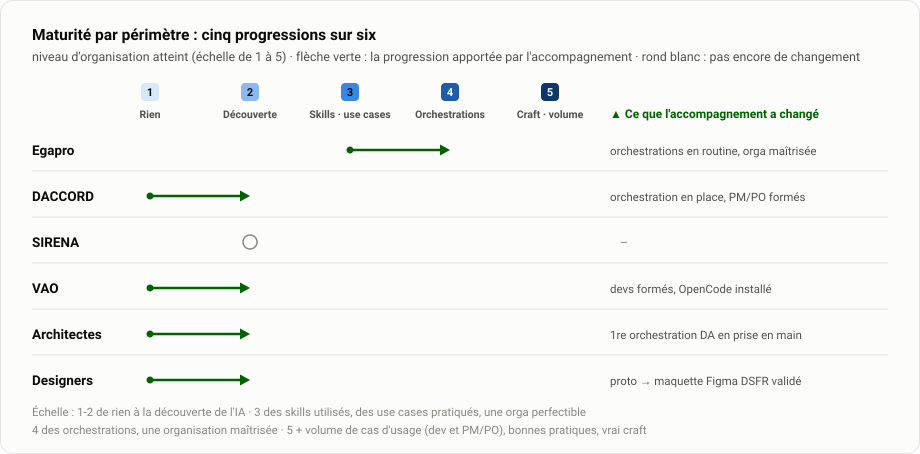
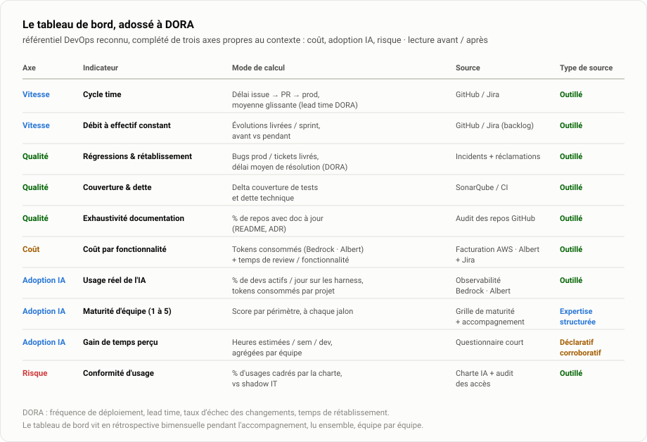
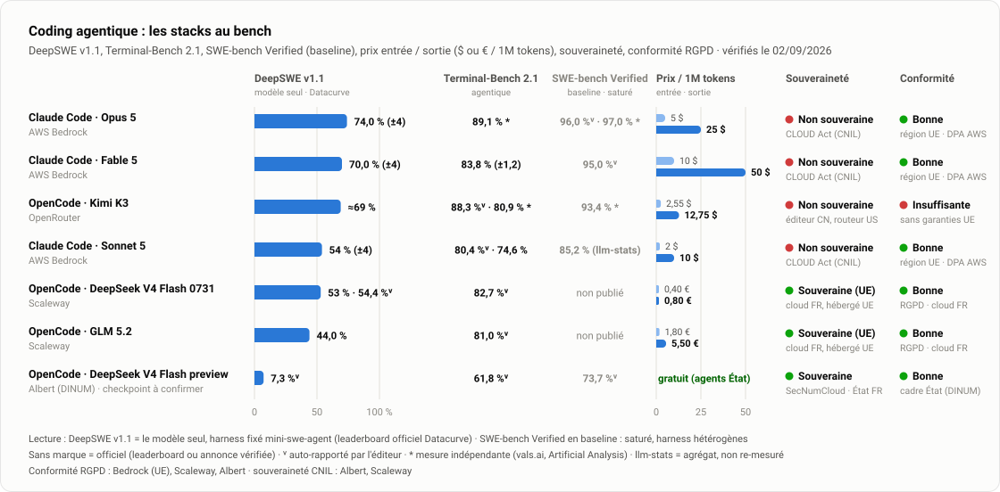

Ministères sociaux · Direction du numérique
Transformation IA : le suivi de la stratégie d'adoption
État au 15 septembre 2026 · mis à jour chaque semaine
Une première orchestration tourne chez les architectes
L'IA vérifie que les fonctionnalités du SI applicatif sont décrites de façon cohérente sur tout le DA. OpenCode Desktop + Albert, en prise en main.
Du prototype IA à la maquette Figma DSFR : qualité validée
Composants DSFR officiels via le MCP Figma. La priorité devient la boucle de feedback, agréable même pour un designer non technophile.
PM/PO DACCORD, développeurs VAO, Igor et Nicolas, Adrien Chauve
Les PM/PO ont un skill de tickets en main, VAO a installé OpenCode, Igor et Nicolas veulent orchestrer.
L'autonomie des équipes, puis l'orchestration avec Igor et Nicolas
Le niveau 3 se validera à l'usage quotidien, pas à la sortie de l'atelier. Accompagnement d'Igor et Nicolas au retour de congé.
Roadmap
![Roadmap de la mission, du 13 juillet à fin octobre 2026 : jalons réalisés (coaching DACCORD le 16 juillet, référentiels d'architecture fin juillet, atelier DA le 4 août, atelier skills le 6 août, point design le 13 août, développement augmenté VAO et validation prototype vers Figma le 3 septembre, formation PM/PO DACCORD et acculturation d'Igor et Nicolas les 8 et 9 septembre, orchestration de DA en prise en main mi-septembre), puis cartographie des comptes Bedrock fin septembre et orchestration avec Igor et Nicolas au retour de congé](Etat-avancement/assets/04-roadmap-light.svg)
La cible : le cycle produit augmenté par l'IA
Cinq skills, du besoin au code livré. Chacun part des standards de l'équipe (le contexte), parle aux outils par MCP et produit l'artefact qui alimente le suivant. L'agent propose, la règle prouve, l'humain valide.
| Responsable produit | Designer | Développeur | |||
|---|---|---|---|---|---|
| /planrefinement du ticket | /prototypedu ticket au prototype | /maquettedu prototype validé à Figma | /plan-techplan et revue d'impact | /implementationcode et tests | |
| L'agentpropose |
|
|
|
|
|
| L'humaindécide |
|
|
|
|
|
| Contexteles standards |
|
|
|
|
|
| MCPoutils branchés | Jira | DSFR | Figma | Jira | JiraFigma |
| Sortiel'artefact | Ticket Jira précis, au standard, avec ses critères d'acceptation | Prototype DSFR, montré aux utilisateurs | Maquettes Figma du prototype validé, conformes DSFR | Revue d'impact prévu sur le code + plan d'implémentation | Code et tests, prêts pour la CI |
| Soutiens à la productionvérifient le code | Pendant /implementation ↓ commitIDE : ESLint Quality gate avant commit : RGAA, standards de qualité, build sans erreur Après le commit CI/CD : Sonar, pré-audit RGAA poussé, revue de code supplémentaire au besoin | ||||
- Skill : commande (/plan, /prototype…) lancée dans le harness de l'équipe, OpenCode Desktop + Albert ou Claude Code + Bedrock · MCP : connecteur standard entre l'agent et un outil (Jira, Figma, DSFR)
- Le ticket Jira est le fil conducteur : produit par /plan, lu par /prototype, /plan-tech et /implementation
- Cible : des soutiens à la production aussi pour le produit (Definition of Ready outillée) et le design (audit DSFR / RGAA), paliers 2 et 3 de la checklist de déploiement
Le même schéma en image, pour les slides et le README : Cycle-produit-IA.md. La checklist décline cette cible en quatre paliers, suivis dans l'onglet Équipes.
Les deux rails, à chaque étape de l'usine
Un rail agentique qui génère, un rail déterministe qui vérifie. Équipe pilote identifiée : SIGeSS.
![Usine logicielle cible : à chaque étape (product, design, build, livraison), deux rails. Le rail agentique génère : challenge par l'IA de la clarté du besoin, formalisation et critères d'acceptation ; prototypes basés sur le design system ; génération de code, tests, revue et recette assistée par agent ; notes de version, changelog et documentation automatisée. Le rail déterministe vérifie : formatage des specs et Definition of Ready ; respect du design system et audit d'accessibilité ; pipeline CI avec formatage, tests, couverture Sonar et review humaine ; validation humaine de la livraison](Etat-avancement/assets/08-usine-light.svg)
Où en est chaque équipe
Quatre paliers à franchir, un par niveau de maturité publié. Un palier est atteint quand ses cases sont cochées et tenues à l'usage.
| Équipe | Socleaccès · budget · charte · doc | 1 · Acculturerniveau 2 | 2 · Outillerniveau 3 | 3 · Orchestrerniveau 4 | 4 · Industrialiserniveau 5 | Niveau |
|---|---|---|---|---|---|---|
| Egapro | en coursdoc fonctionnelle | atteint | atteint | atteint | en courspré-audit RGAA, mesure | 4 |
| DACCORD | en coursbudget tokens | atteintdevs et PM/PO formés | en coursskill de tickets en prise en main · skills dev en atelier · Sonar et ESLint arrivent | en coursorchestration front et back en place, à étendre à la doc et au changelog | à venir | 2 |
| SIRENA | en cours | en coursformation PM/PO à caler | à venir | à venir | à venir | 2 |
| VAO | en coursOpenCode Desktop installé | en coursdevs formés le 3/09 · tickets avec Halim à caler | à venir | à venir | à venir | 2 |
Hors grille, deux fonctions transverses progressent : les architectes prennent en main une première orchestration de DA ; les designers ont une solution validée (prototype → maquette Figma DSFR), dont la boucle de feedback servira la colonne Design de chaque équipe. Trois règles : on ne saute pas de palier · la règle avant l'agent (rail déterministe au palier 2, bot de revue IA au palier 4) · le palier atteint est le niveau publié.
La checklist, équipe par équipe
| Palier | Product (PM / PO) | Design | Build (dev) | Livraison (CI, run) |
|---|---|---|---|---|
| Socleporté par la mission et le transverse | ||||
| 1 · Acculturerchacun a vu l'IA sur son propre quotidien | ||||
| 2 · Outillerles outils sont partagés, versionnés, utilisés | ||||
| 3 · Orchestrerle workflow est structuré, l'organisation maîtrisée | ||||
| 4 · Industrialiserl'usine tourne et se mesure | ||||
Ce qu'il faut pour franchir chaque palier
| Palier | L'équipe apporte | La mission apporte | Preuve |
|---|---|---|---|
| 1 | Une demi-journée par métier | Ateliers, démos sur un cas réel de l'équipe | Un artefact produit par métier |
| 2 | Ses skills, revus ensemble | Catalogue de skills communs, relecture, atelier skills | Skills et contexte dans le repo, CI verte |
| 3 | Son workflow, adapté à son board | Orchestrations éprouvées sur Egapro, accompagnement individuel | Tickets livrés par l'orchestration |
| 4 | Ses indicateurs avant / après | Bot de revue, tableau de bord DORA, mesure | Un trimestre de données |
Ce que l'accompagnement a apporté
La maturité d'organisation de chaque périmètre, sur une échelle de 1 à 5. Le niveau n correspond au palier n − 1 de la checklist. Cinq périmètres sur six ont progressé.

Par périmètre
| Périmètre | Niveau | Ce que l'accompagnement a changé |
|---|---|---|
| Egapro | 3 → 4 | Orchestrations en routine, organisation maîtrisée |
| DACCORD | 1 → 2 | Orchestration front et back en place, PM/PO formés avec un skill de tickets ; le 3 se validera à l'usage |
| SIRENA | 2 | Usage réel mais individuel ; formation PM/PO à caler |
| VAO | 1 → 2 | Développeurs formés, OpenCode installé, pratique démarrée |
| Architectes | 1 → 2 | Première orchestration de DA en prise en main |
| Designers | 1 → 2 | Prototype → maquette Figma DSFR : qualité validée |
L'échelle
| 1-2 | De rien à la découverte de l'IA |
| 3 | Des skills utilisés, des use cases pratiqués, une organisation encore perfectible |
| 4 | Des orchestrations, une organisation maîtrisée |
| 5 | Orchestrations, volume de cas d'usage dev et PM/PO, bonnes pratiques renseignées, vrai craft |
Le niveau mesure ce que l'accompagnement a apporté à l'organisation d'un périmètre, pas une note de l'équipe. Le détail use case par use case est dans Details.md.
Comment on suivra l'impact
Chaque indicateur sera lu avant / après pour isoler l'apport de l'IA. Socle DORA, complété de trois axes : coût, adoption IA, risque. Aujourd'hui, seule la maturité est mesurée ; le reste s'instrumente avec les équipes de palier 4.

| mesuré | Maturité d'équipe (1 à 5) : à chaque jalon, par périmètre. C'est le palier atteint de la checklist. |
| selon la voie d'accès | Usage réel de l'IA : devs actifs et tokens par projet, lisibles seulement via l'observabilité du provider retenu (onglet Outillage). |
| à lancer | Gain de temps perçu : questionnaire court, une fois par trimestre, en corroboration des mesures. |
| à instrumenter | Cycle time, débit, régressions, couverture, documentation, coût par fonctionnalité, conformité d'usage : à brancher sur GitHub / Jira, Sonar et la facturation du provider, en commençant par Egapro. Le point zéro se prend au passage du palier 3. |
Outillage : stacks, populations, voies d'accès
Sept stacks comparées sur performance, prix, souveraineté et conformité. Aucun chiffre estimé : toute case sans donnée est « non publié ». Le modèle Albert (gratuit, souverain) sert déjà aux architectes et aux PM/PO DACCORD.

Lire le bench
- Performance : DeepSWE v1.1 en principal (modèle seul, harness fixé, leaderboard officiel Datacurve) ; Terminal-Bench 2.1 en agentique ; SWE-bench Verified en simple baseline.
- DeepSeek dédoublé : Scaleway sert le checkpoint 0731, Albert a priori la preview d'avril (à confirmer auprès de la DINUM). Même nom, performances agentiques sans rapport.
- Souveraineté (CNIL) : Albert (SecNumCloud) et Scaleway (cloud français) tiennent. Bedrock n'est pas souverain : CLOUD Act, quelle que soit la région.
- Conformité RGPD : Bedrock en région UE, Scaleway et Albert conformes ; OpenRouter sans garanties.
Supports et suite
- Bench des harness de coding agentique (PDF) : les 7 stacks, une recommandation selon la priorité.
- Souveraineté et performance des modèles et harness (PDF), livré le 3 septembre.
- Prochaines étapes : bench élargi aux modèles Bedrock dès la liste AWS, puis bench en conditions réelles.
Coût : les externes restent sur leur abonnement Claude ; les internes démarreront à environ 20 € par siège plus chaque token consommé. D'où l'enjeu du bench pour les internes et la CI.
Qui peut utiliser quoi
Ce qui s'installe, population par population. 🟢 possible · 🟠 possible mais non conforme · 🔴 impossible · ⏳ à instruire.
| Harness + fournisseur de modèles | Internes · Windows | Internes · Linux | Internes · Mac | Externes · non confidentiel | Externes · confidentiel |
|---|---|---|---|---|---|
| OpenCode Desktop + Bedrock / Scaleway ou Albert | 🟢 | ⏳ | 🟢 | 🟢 | 🟢 |
| VS Code (plugin Claude Code) + Bedrock / Scaleway ou Albert | 🟢 | ⏳ | 🟢 | 🟢 | 🟢 |
| OpenCode Desktop + modèles gratuits | 🟠 | ⏳ | 🟠 | 🟠 | 🟠 |
| VS Code (plugin Claude Code) + clé personnelle | 🟠 | ⏳ | 🟠 | 🟠 | 🟠 |
| Claude Desktop + Bedrock / Scaleway | 🔴 | ⏳ | 🟠 | 🟠 | 🟠 |
| Claude Desktop + clé personnelle | 🔴 | ⏳ | 🟠 | 🟠 | 🟠 |
| Codex + Bedrock / Scaleway | 🔴 | ⏳ | 🟠 | 🟠 | 🟠 |
| Codex + clé personnelle | 🔴 | ⏳ | 🟠 | 🟠 | 🟠 |
Trois voies d'accès aux modèles
| Fournisseur | Ce qu'il apporte | Le point à lever | Où on en est |
|---|---|---|---|
| AWS Bedrock | Claude Code avec observabilité complète, région UE, large catalogue | L'observabilité est adossée à Claude Code : le harness est imposé | exploré, viable |
| Scaleway | Modèles open-weight intéressants, souveraineté française | Valider le champ des possibles côté observabilité | à explorer |
| Google Vertex AI | Accès à des modèles frontier de plusieurs éditeurs (à confirmer) | Vérifier l'observabilité depuis n'importe quel harness | à explorer |
La cible : une observabilité indépendante du harness, pour choisir librement le couple harness × modèle selon la tâche et le budget.
Sujets du moment
Lecture du 15 septembre 2026, par ordre d'importance.
ArchitectesDe cinq use cases identifiés à une orchestration qui tourne
L'IA vérifie que les fonctionnalités du SI applicatif sont décrites de façon cohérente sur tout le DA, du contexte aux choix techniques. Stack légale sur poste ministère : OpenCode Desktop et DeepSeek V4 Flash via Albert. Les architectes la font tourner sur des DA réels.
Enjeu : l'autonomie, qui validera le niveau 3 ; puis le use case suivant (cohérence des choix techniques, écarts entre DA et code).
Igor et NicolasInitiés, ils veulent orchestrer
Igor Ranquin et Nicolas Fournier ont été initiés à l'IA générative. Ils ne veulent pas rester à la découverte : mettre les mains dans l'orchestration, en partant du use case de DA.
Suite : accompagnement à une première orchestration au retour de congé de Selim. Igor porte les référentiels d'architecture : c'est la règle d'architecture qui devient exploitable dans l'IDE.
DesignLa solution est validée, reste à la rendre agréable
Le passage d'un prototype IA vers une maquette Figma en composants DSFR officiels est validé (MCP Figma, compte full). Priorité 1 désormais : une boucle de feedback simple, pour que l'expérience reste agréable même pour un designer non technophile. Aussi posés : MCP DSFR en 1.15, point sur l'alpha 3 du DSFR 2.0.
Ce que ça ouvre : l'acculturation de tous les designers, que Norman conditionnait à une solution éprouvée.
ProductLe ticket IA entre dans le quotidien des PM/PO
PM/PO DACCORD formés le 8 septembre : un skill les challenge sur la précision de leurs tickets et formalise le ticket entier, critères d'acceptation compris. Système fourni : OpenCode Desktop et un modèle Albert. Olivier Toumsy les forme en parallèle. Aurélie (SIRENA) est demandeuse : à caler. Halim (VAO) à caler.
Enjeu : que le ticket IA devienne la norme (palier 2), pas un outil de plus.
VAOFormés, OpenCode installé, la pratique démarre
Atelier de développement augmenté du 3 septembre : les développeurs pratiquent désormais le dev augmenté sur leurs postes. Périmètre monté de 1 à 2.
Suite : un premier ticket livré en dev augmenté, puis le palier 2 (skills et contexte partagés dans le repo).
Décisions attenduesTrois arbitrages, et le choix du harness à préserver
Gary : qui porte le pré-audit d'accessibilité hors des sprints Egapro, avec la mesure intégrée. Centre logiciel : l'accès pour packager les harness cibles (introduction par Olivier). Direction : la stack des agents internes, après le bench élargi aux modèles Bedrock et les explorations Scaleway et Vertex AI.
Fin septembre : cartographie des bénéficiaires Bedrock (internes, externes sur sujets sensibles).